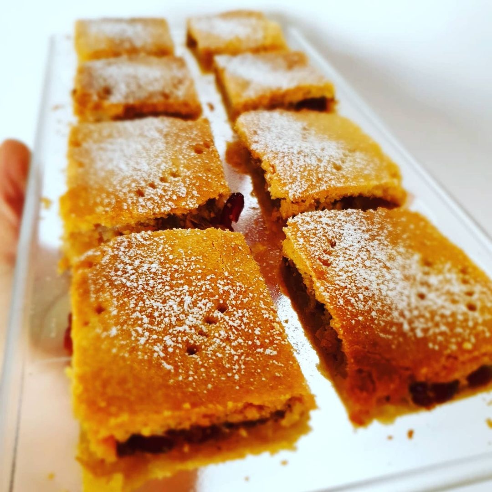

Tenký jablkový 🥧 🍎
.
Tento koláčik je u nás v rodine najobľúbenejši už dlhé roky
.
Na prípravu veľkého plechu 30×40cm (cca 30 ks) budeme potrebovať:
Cesto
▪️500g hladkej múky
▪️250g masla
▪️4 žĺtky
▪️100g práškového cukru
Plnka:
▪️1kg jabĺk
▪️vanilkový cukor
▪️škorica
▪️brusnice
▪️4 bielka
▪️1 lyžica kryštálového cukru
Cesto:
Všetky suroviny na cesto spolu vymiesime na hladké cesto, ktoré rozdelíme na dve rovnomerné časti. Odporúčam nechať cesto chvíľu postáť v chlade.
Plnka:
Jablká očistíme, nastrúhame, pridáme umyté sušené brusnice a vanilkový cukor.
Bielka vyšlahame na tuhý sneh s lyžicou kryštálového cukru.
Prvú časť cesta vyvaľkáme na hladký plat a položíme na plech, ktorý je vystlaný papierom na pečenie. Potom dáme jablkovu plnku, na ňu sneh z bielok. Na vrch položíme vyvalkany druhy plat cesta. Popicháme vidličkou a dáme piecť do vyhriatej rúry.
Pečieme na 180°C približne 30 minút.
Dajte vedieť či aj vo vašej rodine poznáte tento koláčik 🍎
.
.
.
.
.
.
#radostvkuchyni #dnesjem #dnesvarim #dnespeciem #jablkovykolac #baking #apple #applepie #applepierecipe #sweet #sweetrecipe #domacepecenie #peciemeslaskou #peciem #kolac #kolacik #